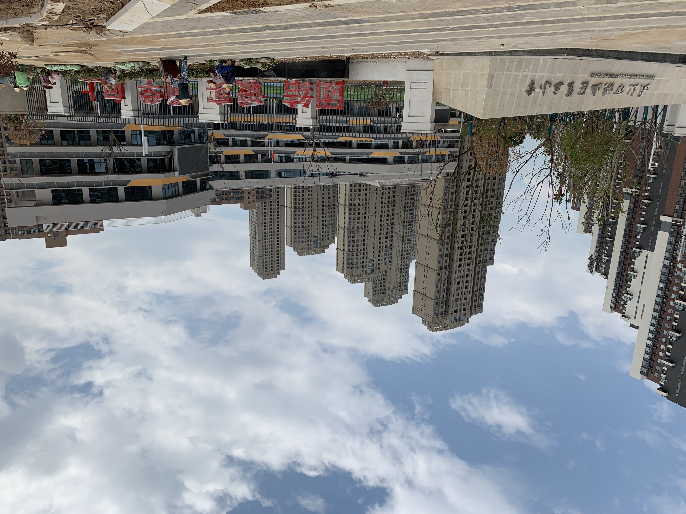

学校外観（洪山三小）
プロジェクト概要
- 工事名称
- 武漢市洪山区第三小学 — 地下駐車場交通施設・区画線工事
- 発注者
- 武漢建工集団股份有限公司
- 所在地
- 湖北省武漢市洪山区狮子山北路6号
- 工期
- 2019年7月 〜 2020年
- 施設規模
- 総建築面積 約 22,575 m²、地下室 約 8,928 m²
- 工事種別
- 交通施設・区画線・標識設置
- 着工
- 2019年9月 学校正式投入使用
施工内容
| 項目 | 内容 |
|---|---|
| 標識标牌 | 駐車場案内・方向指示・番号標識 |
| 区画線 | 駐車枠・車線・歩行者横断 |
| 減速帯 | ゴム製減速帯（黄黒） |
| 車止め | 駐車用車止めブロック |
| 角保護 | 柱・壁面コーナーガード |
担当範囲
- 地下駐車場交通施設の調達・設置・施工管理
- 標識标牌の設計確認、製作、取付
- 区画線施工（駐車枠・車線・歩行者区域）
- 減速帯・車止め・角保護等の設置
- 武漢建工現場担当者との工程調整・検収対応
1図面
確認
確認
2材料
調達
調達
3区画線
施工
施工
4標識
設置
設置
プロジェクトの特徴
面接で話せるポイント
- 教育施設（新建小学校）地下駐車場の交通施設一括施工経験
- 武漢建工との標識・区画線・安全設備の調整・検収実務
- 区画線から標識設置まで一貫した現場管理能力